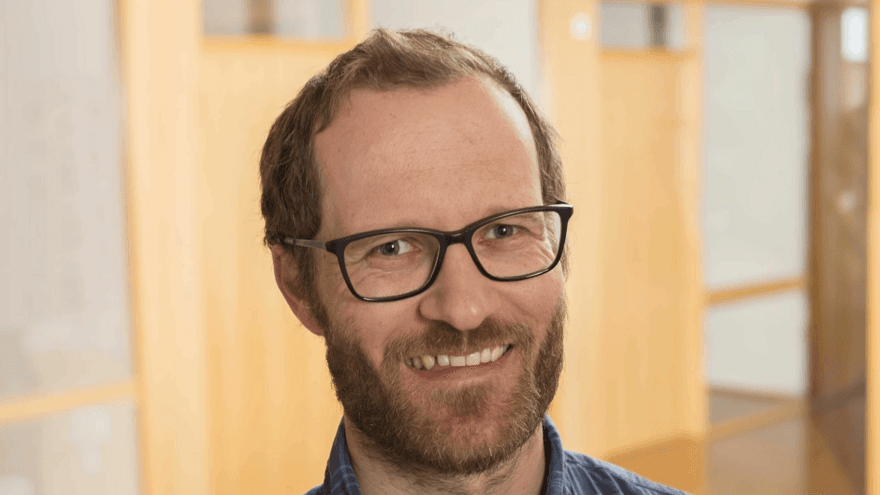

Genomic prediction.
Genomic breeding values for production and disease traits in Atlantic salmon and rainbow trout.
Quantitative genetics, breeding and AI
Senior Researcher at AquaGen AS, Ås.
I work on genetics for salmon and trout breeding. Most days that means genomic prediction, GWAS and the data flows that feed them. I also build AI and computer-vision tools for breeding data, and I help colleagues get started with AI in their own work.
I have been at AquaGen since 2017. Before that I took an MSc and a PhD in statistical genomics at NMBU, in the CIGENE group.

Genomic breeding values for production and disease traits in Atlantic salmon and rainbow trout.
Mapping loci behind traits in breeding populations, and studying how recombination varies with sex and between individuals.
Computer vision for measuring traits from images, so that more animals can be recorded at lower cost.
Genotype imputation, QC and analysis workflows that other people can rerun and check.
I use coding agents every day. I set the goal, the agent writes and runs the code, and I check the result against what I know about the data and the biology. That has moved the bottleneck. I can now build and host small applications myself, take another go at old problems, and try methods outside my own training.
Domain knowledge still decides whether the result is useful. General models can take on new tasks from a plain description, but someone has to define the task and judge the output.
Recent public projects from my GitHub. Some are research pipelines, some are small apps for everyday use.
A few below. Google Scholar has the complete, up-to-date list, and there's a machine-readable version in publications.json.
Genomics of bovine milk fat composition. Doctoral thesis, Norwegian University of Life Sciences, 2018. Series: PhD Thesis;2018:19. The work was done in collaboration with Geno.
The thesis mapped mutations affecting fatty acid composition in milk from Norwegian Red cattle, with emphasis on the de novo synthesised fatty acids and the two major milk fatty acids, palmitic and oleic acid.